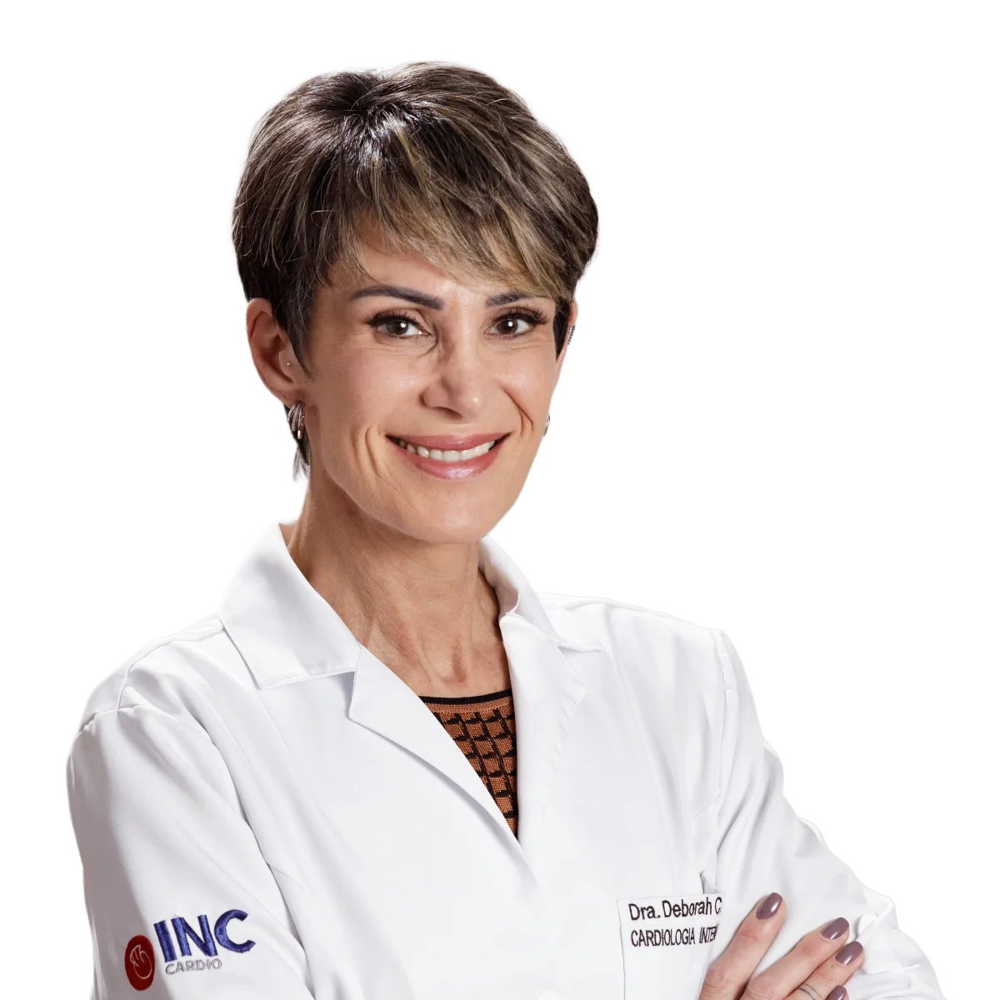

TAVI Implante transcateter de válvula aórtica
Troca da valva aórtica sem cirurgia de peito aberto: alternativa minimamente invasiva para a estenose aórtica, especialmente em pacientes de risco cirúrgico elevado.
Saiba maisCardiologia intervencionista · Curitiba – PR
Avaliação diagnóstica rigorosa e intervenções estruturais e coronarianas de alta complexidade.
Soluções únicas para cada coração
Desde avaliações diagnósticas com precisão até tratamentos de valvopatias e oclusão de comunicações intra e extracardíacas. Angioplastia com colocação de stents, avaliação por imagem intravascular e assistência circulatória.
O conceito de HeartTeam está incorporado no dia a dia da OneHeart: especialistas de diferentes áreas da cardiologia pensam e planejam, juntos, o tratamento de cada paciente.
Conheça nossos cuidadosProcedimentos minimamente invasivos de alta complexidade.
Troca da valva aórtica sem cirurgia de peito aberto: alternativa minimamente invasiva para a estenose aórtica, especialmente em pacientes de risco cirúrgico elevado.
Saiba maisReparo transcateter das valvas mitral e tricúspide para insuficiência valvar significativa e sintomática. Opção segura para quem tem risco cirúrgico elevado.
Saiba maisMedida precisa do impacto real de cada obstrução coronariana no fluxo sanguíneo, para decisões embasadas que evitam procedimentos desnecessários.
Saiba maisAvaliação criteriosa do forame oval patente e fechamento por cateterismo quando há indicação, com base nas evidências científicas mais recentes.
Saiba maisAcesso pelo punho ou pela virilha para olhar diretamente as artérias do coração: diagnóstico e, quando indicado, tratamento no mesmo procedimento.
Saiba maisTratamento das obstruções das artérias coronárias com implante de stent, guiado por imagem intravascular quando necessário.
Saiba maisRespeito, rigor científico e expertise em cada avaliação.

Cardiologia intervencionista · Responsável técnico
CRM-PR 24.914 · RQE 21.026
Ver perfilQuando a valva aórtica se estreita e endurece, o coração trabalha muito mais. Entenda a alternativa minimamente invasiva à cirurgia de peito aberto.
Ler artigoCansaço, falta de ar e inchaço podem indicar insuficiência mitral. Conheça o reparo transcateter bordo-a-bordo, sem cirurgia de coração aberto.
Ler artigoCerca de uma em cada quatro pessoas tem FOP e, para a maioria, ele é inofensivo. Separe os mitos das verdades e saiba quando o fechamento é indicado.
Ler artigoAgende uma avaliação com nossa equipe.